Wiesloch, Germany
Public square
"Verscheucht nun die Sorgen..." — chase away the worries now. A bronze rooster bursts through a vine ring, grapes tumbling. Wine country wisdom cast in metal.
Found 2026Wine imagery collected on my travels. Building facades, village squares, cathedral towers, forgotten corners. The vine leaves a trace everywhere it has been cultivated — and I'm following it.
The grape, the vine, the tendril. The most direct symbols of viticulture — carved, painted, woven into architecture.
Public square
"Verscheucht nun die Sorgen..." — chase away the worries now. A bronze rooster bursts through a vine ring, grapes tumbling. Wine country wisdom cast in metal.
Found 2026
Uşak Museum
Grape garlands carved into ancient marble — a column base or altar fragment. The vine was sacred here long before the word "wine" existed.
Found 2026
Archaeological museum
A painted tile fragment — vine leaves and grape clusters in ochre and blue. Millennia old, from a land that still carries the name of its most famous wine.
Found 2026
La Sagrada Família
"Amen" — and beside it, a grape cluster carved into Gaudí's stone. The Eucharist made visible: bread and wine encoded into the cathedral's skin.
Found 2026Village marker
A painted coat of arms: lion above, grapes and fish below. The vine shares heraldic space with older symbols of the land.
Found 2026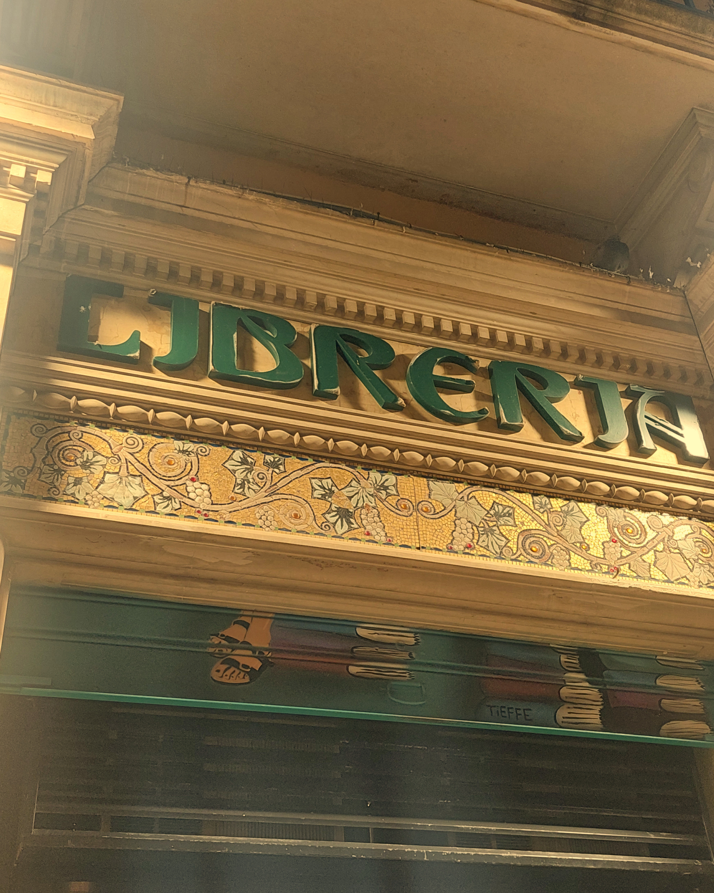
Libreria storefront
Vine patterns climb the tile border of a bookshop facade — the grape finds its way even into places dedicated to words.
Found 2026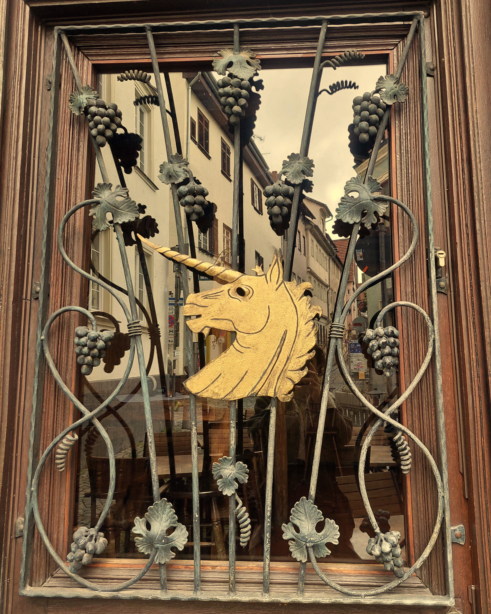
Wine bar door, old town
A golden horse head framed by wrought iron grape vines — the entrance to a wine bar, where craft announces what waits inside.
Found 2026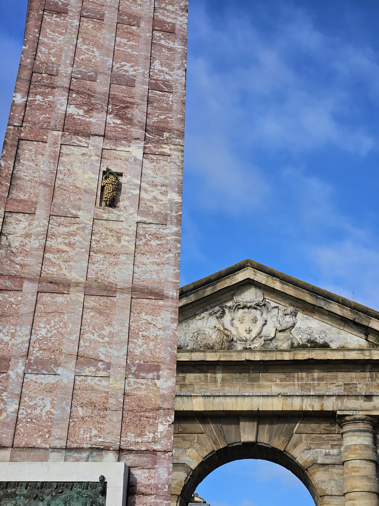
Place de la Victoire
A gilded grape cluster embedded in red marble — part of Ivan Theimer's 2005 monument to Bordeaux viticulture, the first of its kind in the city.
Found 2026Vineyard viewpoint
"Schönste Weinsicht 2020" — a rusted steel sign marking Württemberg's most beautiful wine view, the grape cluster cut out to frame the landscape beyond.
Found 2025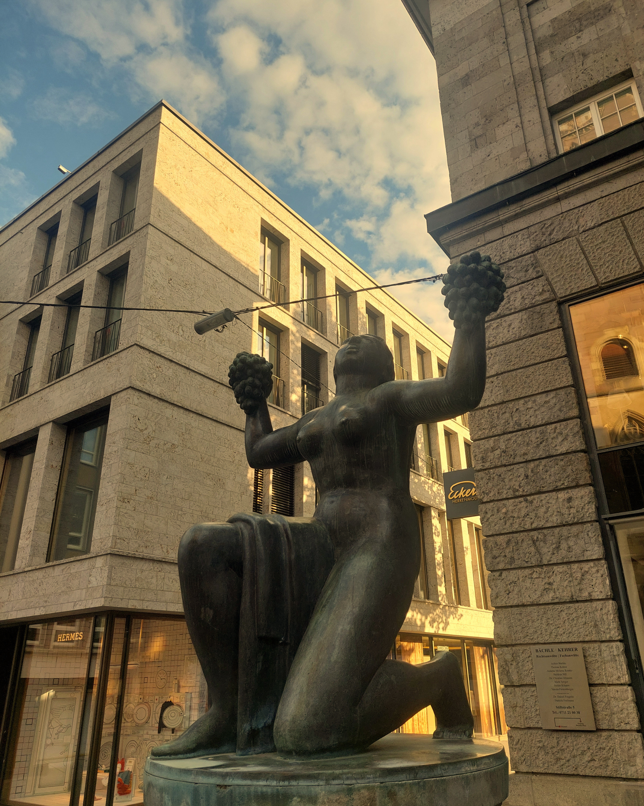
Sparkasse, city center
A bronze figure holds grape clusters against the sky — Württemberg's wine heritage cast in metal at the heart of the city.
Found 2025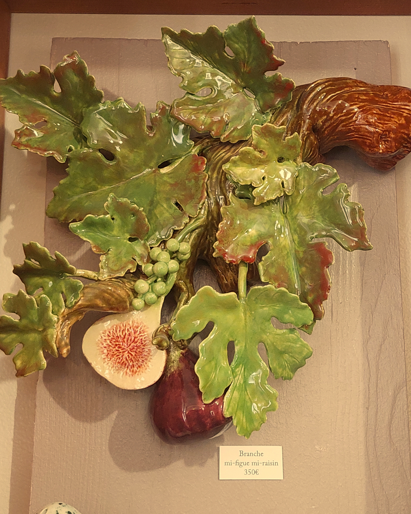
Ceramic shop, old town
A ceramic still life heavy with vine leaves, grapes, and figs — Alsatian craftsmanship celebrating the region's harvest.
Found 2025
Old town cellar door
A painted grape tile above a cellar entrance, dated 1702. Over three centuries of marking what lies beneath.
Found 2025
Azkuna Zentroa
A grape-covered column inside the cultural center — once a wine warehouse, now transformed by Philippe Starck's 43 unique columns.
Found 2024Village square
A bronze bear clutching grapes in the heart of Alsace wine country. The bear is Andlau's symbol — legend says a bear showed the founders where to build.
Found 2024
La Sagrada Família
Grape clusters carved into the stone of Gaudí's unfinished masterpiece. Nature made permanent in sandstone.
Found 2023Pruning, harvest, pressing, cellar work. The human effort that transforms wild vine into wine.

Old town
A wooden wine press stands beneath its own small roof — screw, beam, and barrel intact. The machine that once crushed the harvest, preserved as monument.
Found 2026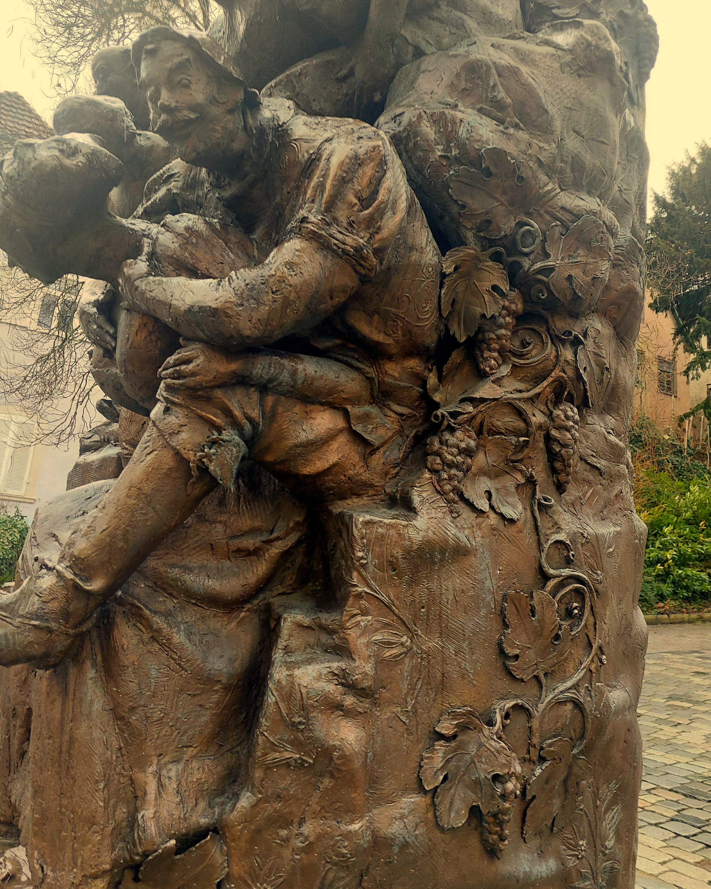
Town square
A bronze sculpture telling the city's story — figures emerge from vines, the grape woven into Weinheim's very name and history.
Found 2026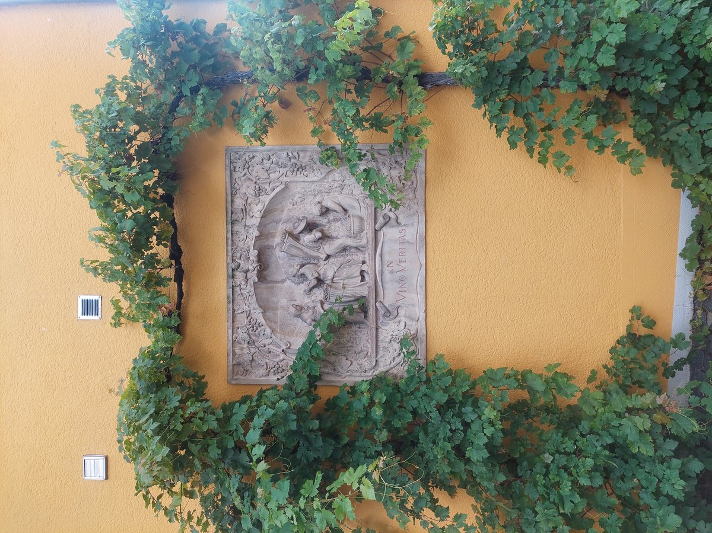
Winery wall, near Mehring
A stone relief showing harvest labor, set into an ochre wall and framed by living vines — art and cultivation intertwined.
Found 2026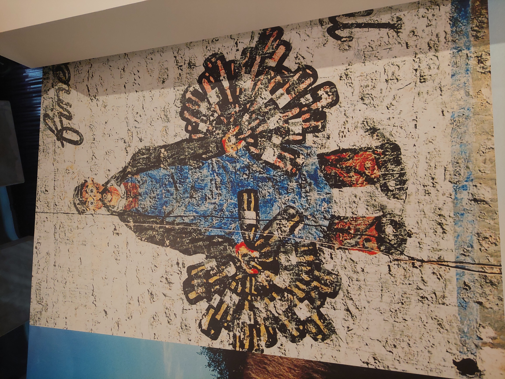
Museum (possibly MuCEM)
A weathered mural showing a figure carrying wine bottles — labor caught in faded pigment, origin still being traced.
Found 2026Winzer building, old town
A yellow facade alive with painted figures — winemakers, barrels, and grape motifs announcing the trade of the house.
Found 2025
Building facade, old town
Dancers carrying a wine barrel, painted in sgraffito directly onto the building's plaster. Celebration of the harvest, frozen on a wall.
Found 2025Cup, glass, amphora, fountain. The containers that hold and pour — symbols of hospitality and ritual.

Florio winery cellar
A giant barrel rises under vaulted arches, dwarfing the cart of smaller casks before it. Scale as statement — Florio's cathedral of Marsala wine.
Found 2026
Florio winery
"La leggerezza del sogno" — a surrealist mural by Prometeo. A hand emerges from rocky peaks to offer a Florio bottle to a dreaming moon. Wine as gift to the cosmos.
Found 2026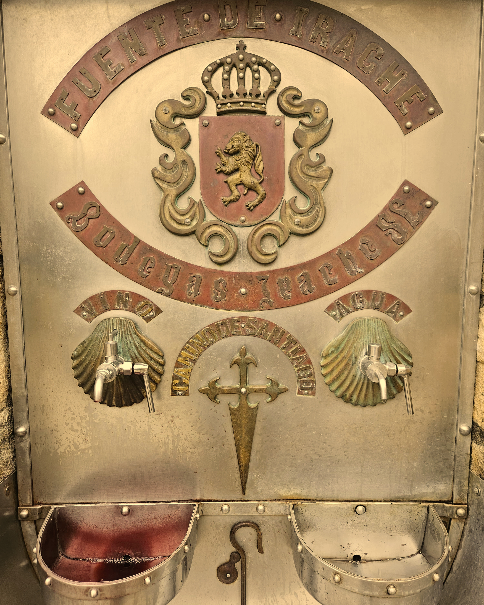
Fuente de Irache, Camino de Santiago
Two taps emerge from the wall: one pours water, the other wine. A gift from the local bodega to pilgrims walking the Camino.
Found 2024Bacchus, Dionysus, satyrs, maenads. The mythological realm where wine meets the divine.
Public square
A bronze Bacchanal — figures entwined, one lifting grapes to the sky. The god's world rendered in metal, presiding over a Catalan plaza.
Found 2026
Uşak Museum
A Roman funerary stele — the deceased gazes out beneath a pediment carved with grapes and a bird. Even in death, the vine accompanies.
Found 2026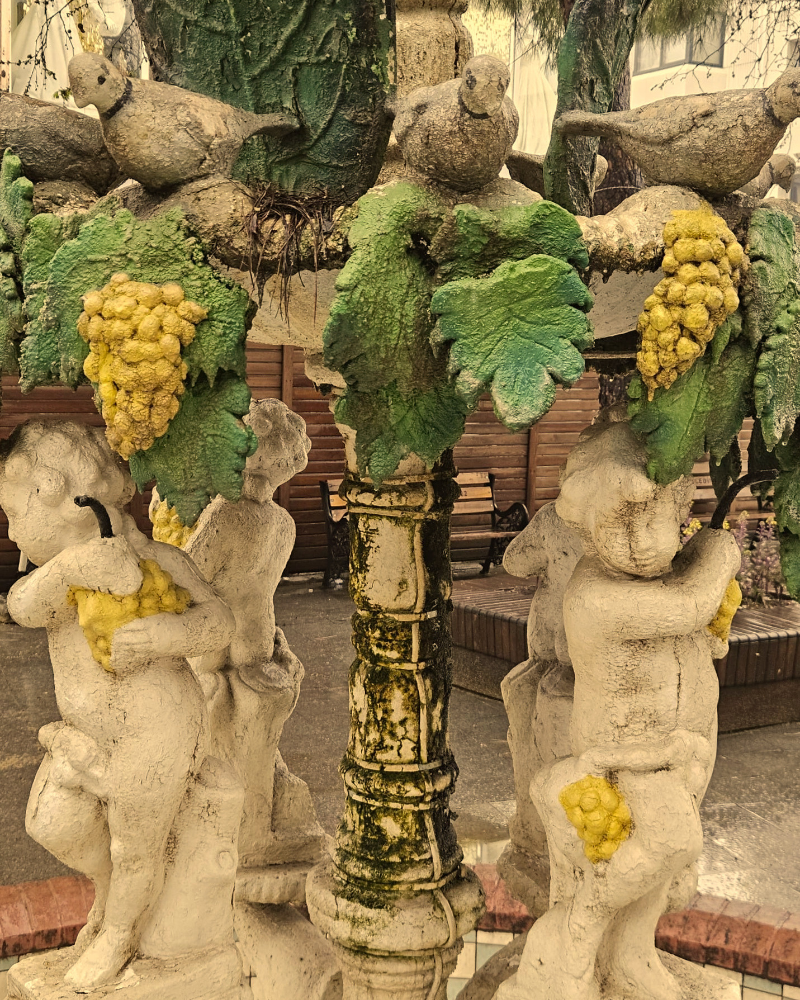
City square
Putti holding painted grapes at a city fountain — a trace of wine culture in a land where the vine has grown for millennia.
Found 2026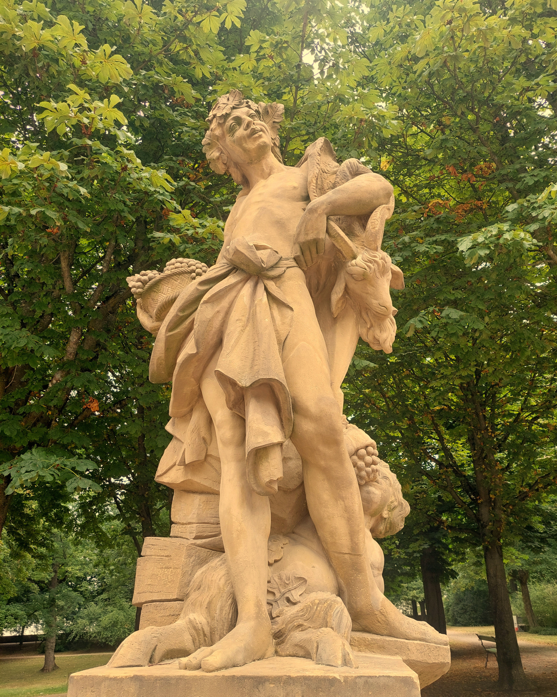
Schloss garden
A classical sculpture group in the palace garden — figures entwined with grapes, Baroque excess rendered in stone.
Found 2025
Archaeological site
An ancient painted altar bearing traces of wine rituals. Millennia later, the region still carries the name of its most famous wine.
Found 2023Toasting, drinking, feasting. The gestures of consumption and celebration.
No entries yet — still looking.